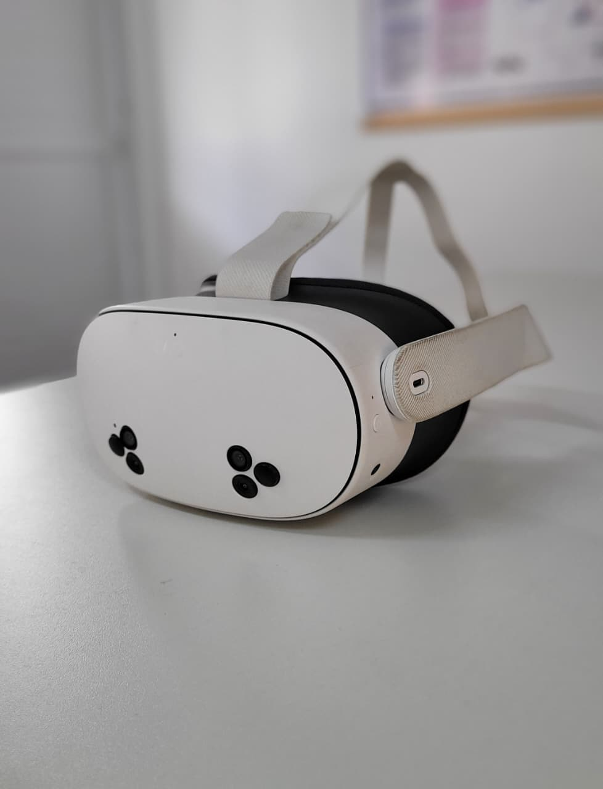

Óculos de Realidade Aumentada OPERACIONAL
Categoria: Equipamento de Realidade VirtualIdentificação Patrimonial
| Código Interno | OVR001 |
|---|---|
| Endereço Físico | ARMB2 |
| Fornecedor | Meta |
1. Descrição e Finalidade
O Meta Quest 3S é um equipamento de Realidade Virtual (VR) utilizado para proporcionar experiências imersivas em ambientes tridimensionais. No Laboratório de Logística, o equipamento é empregado em atividades de ensino, pesquisa e extensão, permitindo a simulação de operações logísticas, ambientes industriais, armazéns, processos produtivos e treinamentos operacionais, proporcionando maior interação entre teoria e prática.

2. Especificações Técnicas
| Marca / Modelo | Meta/Quest 3S |
|---|---|
| Dimensões (A×L×P) | 24,79 x 21,89 x 11,71 cm |
| Peso | 514 g |
| Alimentação Elétrica | Bateria interna recarregável via USB-C |
| Conectividade | Wi-Fi 6E, Bluetooth 5.2, USB-C |
| Armazenamento | 128 ou 256 Gb |
| Acessórios Inclusos | 2 controladores (Touch plus controllers) |
| Sensores | Rastreamento inside-out por múltiplas câmeras |
| Áudio | Alto-falante estéreo integrado |
| Microfone | Integrado |
3. Guia Rápido de Operação
Checklist pré-uso:
- Conferir nível de bateria do headset;
- Conferir se os controles possuem pilhas instaladas;
- Verificar limpeza das lentes;
- Garantir espaço livre para movimentação do usuário;
- Ligar o display interativo caso seja necessária a projeção da imagem;
- Ajustar corretamente a cinta de cabeça;
- Ligar controles.
Cuidados:
- Nunca expor as lentes diretamente à luz solar;
- Não utilizar com lentes sujas;
- Evitar impactos e quedas;
- Guardar sempre no suporte próprio;
- Limpar apenas com material adequado;
- Não utilizar produtos químicos nas lentes;
- Carregar utilizando apenas o carregador compatível;
- Ao usuário: garanta uma boa noite de sono e descanso antes de utilizar, risco de enjoo, tontura e vertigem;
- Garantir espaço para livre movimentação enquanto estiver em uso do óculos.
Passo a passo:
- Instalar pilhas nos dois controles;
- Pressionar o botão lateral do headset para ligá-lo;
- Vestir o equipamento e ajustar tiras de fixação;
- Aguardar inicialização do sistema;
- Segurando um controle em cada mão, pressione e segure os botões "menu" e "meta" até que as luzes brancas dos controles se apaguem e ele se conecte ao headset.
- Selecionar aplicativo ou ambiente de simulação desejado;
- Caso seja necessário exibir a imagem para a turma, acessar o sistema de transmissão (casting) da Meta e projetar a tela na TV Touch;
- Ao término da atividade, desligar o headset;
- Retirar as pilhas dos controles;
- Guardar headset e controles no local destinado.
4. Normas de Segurança e Cuidados
EPIs necessários: não se aplica.
Riscos específicos: enjoo, dor de cabeça e danos físicos.
Quem pode operar: professor, técnico de laboratório e estudante sob supervisão.
Restrições: utilização apenas mediante projeto específico nas dependências do laboratório, não utilizar durante o carregamento e não utilizar com bateria muito baixa durante longos períodos.
Treinamento necessário:
- 🔲 Nenhum
- ☑️ Básico
- 🔲 Intermediário
- 🔲 Operação exclusiva do técnico
5. Manutenção e Conservação
Cuidados com as Lentes (Crítico): Utilize apenas um pano de microfibra seco e próprio para lentes ópticas. Limpe em movimentos circulares, do centro para as bordas. Nunca utilize líquidos, álcool, limpa-vidros ou lenços umedecidos nas lentes, pois isso danificará o revestimento. Aviso importante: Nunca deixe as lentes expostas à luz solar direta, pois elas agem como lupas e queimarão a tela interna do headset permanentemente.
Interface Facial (Almofada/Silicone): Limpe a parte que entra em contato com o rosto usando lenços umedecidos antibacterianos sem álcool e sem abrasivos. Se for a capa de silicone, ela pode ser lavada com água e sabão neutro, mas deve estar completamente seca antes de ser recolocada.
Estrutura externa, Câmeras e Controles: Use um pano de microfibra seco ou um lenço antibacteriano sem álcool para limpar a parte externa do headset e os controles. Mantenha as câmeras de rastreamento (na parte frontal) sempre limpas de marcas de dedo para garantir o bom funcionamento do tracking.
Armazenamento: Guarde o equipamento em um estojo de proteção (case) quando não estiver em uso, longe de poeira, animais de estimação e fontes de calor.
6. Checklist Pós-Uso
Para desligar e guardar o equipamento:
- Desligar corretamente o equipamento: segure o botão power na lateral do headset e, ao exibir o menu na visão, selecione "dormir";
- Guardar todos os acessórios na caixa;
- Organizar cabos e periféricos;
- Remover pilhas dos controles;
- Limpar o equipamento, quando aplicável;
- Registrar qualquer anormalidade observada durante a utilização.
7. Referências e Documentação
- Manual do fabricante: www.meta.com/pt-br/help/quest/881301877183346/
- Página oficial do fabricante: www.meta.com/br/quest/